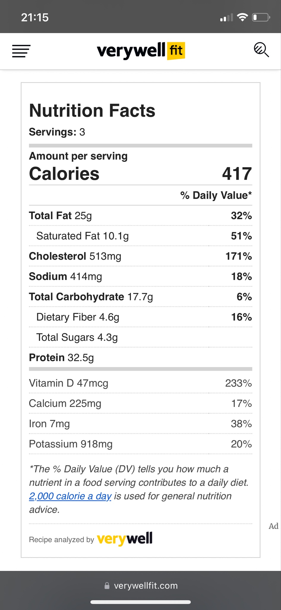

150g broccoli florets
2 tsp olive oil
100g spring onions, sliced
145g cooked new potatoes, sliced
salt and pepper
8 large eggs, beaten
4 egg whites, beaten
1 small bunch parsley, chopped
110g soft goats' cheese
simple green salad, to serve
Step 1
Preheat the grill to its highest
setting.
Bring a pan of water to the boil, add the broccoli
and blanch for 3 minutes. Drain then pat dry on kitchen paper.
Step 2
Heat the oil over a high heat in a
medium-sized, non-stick frying pan. Add the spring onions and fry
for a couple of minutes until softened. Add the broccoli and
potatoes then give the pan a shake to get everything in an even
layer. Season with salt and pepper then whisk together the eggs,
egg whites and parsley and pour over the top. Gently shake the pan
and pull the eggs into the middle as they start to set.
Step 3
Dot the goats' cheese over the
top then slide the pan under the hot grill. Cook for around 3
minutes until the top of the frittata is golden brown and the eggs
are set. Slide onto a board, cut into portions and serve with the
salad.

Nutrition Facts
Servings: 3
Amount per serving
Calories 417
% Daily Value*
Total Fat 25g 32%
Saturated
Fat 10.1g 51%
Cholesterol 513mg 171%
Sodium 414mg 18%
Total
Carbohydrate 17.7g 6%
Dietary Fiber 4.6g 16%
Total
Sugars 4.3g
Protein 32.5g
Vitamin D 47mcg 233%
Calcium
225mg 17%
Iron 7mg 38%
Potassium 918mg 20%